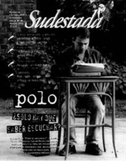

Buscar
Edición N° 36
Marzo 2005
Revista bimensual
Comprar edición impresaSumario
- Fabián Polosecki: su biografía inédita
- Nueva respuesta a Andrés Rivera
- En el precipicio
- José Pablo Feinmann: "¿Cómo puede ser que el filósofo más importante del siglo XX haya sido nazi?"
- Juan Bautista Duizeide y Pablo Ramos: ¿Quién dijo que todo está perdido?
- El cine según Van Sant: Juventud divino tesoro
- Antología Latinoamericana de Microficciones
- Jacinto Piedra: De noche lo siguen gritando...
- Pocho La Pantera: Corazón de payaso